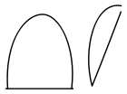
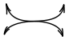

Беседа 3352 от 3877 · Беинса Дуно
Тритѣ връзки / Трите връзки
Добрата молитва.
Кажи ми ти истината.
Въ свѣта търсите най-важното. Въ Писанието има единъ стихъ, дето казва, че нѣкой ималъ голѣмо имане, ходилъ въ странство, търсилъ нѣкой бисеръ, нѣкой скѫпоцененъ камъкъ и като го намѣрилъ, продалъ всичкото си имане, да вземе скѫпоценния камъкъ. Сега нѣкои считатъ, че човѣкъ да бѫде здравъ, то е скѫпоценния камъкъ. Нѣкои считатъ живота за скѫпоцененъ камъкъ. Нѣкои считатъ богатството за скѫпоцененъ камъкъ, нѣкои считатъ знанието за скѫпоцененъ камъкъ. Вие го знаете, но името му не знаете. Тукъ миналата вечерь бѣхъ на едно мѣсто, та между другото има на стената едно огледало.

Казвамъ: Най-важното въ живота е това, което знаете, пъкъ не му знаете името. Туй го наричатъ щастие, наричатъ го блаженство, наричатъ го любовь. Но всичко туй, което търсятъ хората, спорятъ заради него, отричатъ го. Ако васъ ви попитатъ какво търсите въ живота и вие кажете, че търсите Бога, тогава какъ ще намѣришъ това, въ което живѣешъ. То не се намира. Именно рибитѣ, ако искатъ да намѣрятъ какво нѣщо е водата, никога нѣма да я намѣрятъ. Трѣбва да излѣзатъ изъ водата, за да я намѣрятъ. Искатъ да намѣрятъ водата кѫде е. Тя е въ самата вода. Въ водата живѣе и водата търси. Хората живѣятъ въ Бога и търсятъ Бога. Туй, което търсите, то не е реалното. Казва: „Търсете ме, докато съмъ близо“. Да търсишъ нѣщо, значи, когато ти можешъ да се ползувашъ. То е отношение вече. Вечерно време посрѣдъ нощь какво ще търсишъ слънцето? Въ ума ти сѫществува нѣкаква илюзия. Ти виждашъ, че слънцето е залѣзло задъ хоризонта. Който не разбира закона, мисли, че слънцето е отдолу подъ земята, минава отъ другата страна и пакъ изгрѣва. Но то е илюзия, както за отражението въ огледалото, за което ви говорихъ. Слънцето никога отдолу не минава. Но слънцето се върти, хоризонтално върви. Вие виждате, че не земята се върти, но слънцето, виждате движението на слънцето. Движението на слънцето се показва такова, каквото не е. Животътъ се показва такъвъ, какъвто не е. Виждате, запримѣръ, единъ човѣкъ веселъ. На какво да го уподобимъ? Веселиятъ човѣкъ мяза на едно ясно небе. Утре виждате този човѣкъ – не е веселъ. Небето винаги весело ли е? Погледнешъ – единъ день е ясно, но после се заоблачи, цѣлото небе на 100–200 километра заоблачено. Ако туй небе никога не се заоблачава, ако това небе никога не става бурно, ако отгоре не идваше нѣкакъвъ дъждъ, какво щѣше да има на земята? Благодарение, че небето стане сериозно, има какво да дойде оттамъ. Ако стане весело, показва, че свѣтлината ще дойде. Ако стане сериозно, значи дъждътъ ще дойде. Виждаме нѣкой човѣкъ замисленъ. Какво лошо има, ако човѣкъ е замисленъ? Нѣма нищо лошо. Той казва: „Много веселъ“. Щомъ човѣкъ е веселъ, свѣтлината ще дойде. Щомъ е замисленъ, дъждътъ ще дойде. Щомъ е бурно, работата ще дойде. Ние казваме: „Този човѣкъ не е тихъ“. Ако свѣтътъ бѣше направенъ само отъ тихо, какво щѣше да бѫде? Сега вие считате (за) светия (нѣкой), седналъ въ съзерцание като индусъ. Хубаво е съзерцанието. Ако всички бѣха адепти въ съзерцание, какъвъ щѣше да бѫде животътъ? По-голѣми философи отъ камънитѣ нѣма. Погледнешъ – всички седятъ като адепти. Съ години, камънитѣ на Витоша, дето ходимъ, седятъ на едно мѣсто и размишляватъ. Около камънитѣ има едни, които не седятъ, но се измѣнятъ, растатъ.
Та първото нѣщо: вие трѣбва да изучавате тѣлото си. Вие имате една държава, трѣбва да я изучавате. Най-първо онова предприятие на дишането, предприятието на храносмилането, на човѣшката мисъль какъ става. Ако не разбирашъ законитѣ на храносмилането, веднага ще страдашъ, не знаешъ какъ да си измѣнишъ храната. Ако не разбирашъ закона на дишането, ти ще имашъ задушаване, ще се задушишъ. Ако не разбирашъ законитѣ на човѣшката мисъль, винаги умътъ ти се помрачава. Сега мнозина казватъ, че трѣбва да служимъ на Бога. За да служимъ на Бога, трѣбва да изпълняваме законитѣ, които Той е наредилъ.
Обикновено какви обуща трѣбва да носи човѣкъ? Трѣбва ли да бѫдатъ отъ гума или отъ кожа? Ученитѣ хора казватъ, че гуменитѣ обуща не сѫ здравословни, изолиратъ човѣка отъ земята. Коженитѣ обуща сѫ по-хигиенични. Но следствие на това, животнитѣ, които даватъ суровия материалъ за нашитѣ обуща, снематъ кожата имъ и правятъ обуща на насъ. Гледашъ – обущата много хубави, но забравяшъ, че нѣкое животно пострадало. Вземешъ нѣкоя дреха, казвашъ: „Много хубава дреха“. Но хичъ не ти иде на умъ, че остригали дрехата на овцата. Дрехата е взета отъ материала на овцитѣ и отъ този материалъ е направена дрехата. Или, ако е направена отъ памукъ, се отнѣкѫде е взета дрехата отъ природата. Азъ не искамъ сега да представямъ мрачната страна. Всичко въ свѣта е направено за човѣка, за онзи човѣкъ, който мисли, който чувствува, който работи. Може да кажемъ, че Богъ изисква Неговитѣ деца на земята да учатъ. Господь иска децата Му на земята да не боледуватъ, да не остаряватъ. Смѣшно е да кажемъ, че ние сме бедни. Имаме най-богатиятъ Баща и при това се оплакваме, че сме бедни. Имаме Баща, Който никога не боледува, пъкъ ние боледуваме. Имаме Баща, Който всѣкога е благъ, пъкъ ние не сме винаги като Него. Той знае причинитѣ защо. Коя е причината, че не сме като Него? Не е лошо, че не сме като Бога. Въ нѣкои отношения мязаме. Че не е човѣкъ толкозъ благъ, както Бога, не е лошо. Азъ не намирамъ нищо лошо, ако едно шише не може да събере цѣлия океанъ. Шишето е отъ едно кило. Каква разлика между океана и него? Въ туй шише много лесно се разваля водата, отколкото водата на цѣлия океанъ.
Да кажемъ, вие си направите една кѫща. Въ Америка нѣкой пѫть духатъ западни вѣтрове, и като духатъ – по единъ пръстъ прахъ се набира въ кѫщата по всичкитѣ предмети. Презъ всичкитѣ дупчици минава. Ако вие не чистите кѫщата, вѣтърътъ духа, вие ще намѣрите следъ една година прахъ навсѣкѫде, и по килимитѣ, всичко въ прахъ. Пъкъ този прахъ, като се налепи по дрехитѣ ви, действува разрушително върху материала. Не само това, ако не мислимъ, ако не чувствуваме има единъ умственъ прахъ въ свѣта и въ умствения свѣтъ. И въ този свѣтъ, дето живѣемъ сега, е така. Гледайте тази лампа, която свѣти, горението е пълно. Като гори 4–5 месеца, една година, виждашъ, че се окадила малко. Колкото и да е пълно горението, нѣмаме туй правилното горение. Та въ всичкитѣ нѣща, които изучаваме, се има известенъ прахъ. Да кажемъ, въ музиката има музикаленъ прахъ. Щомъ се насъбере музикаленъ прахъ, музикантитѣ ставатъ нервни. Нѣкои музиканти сѫ нервни. То се дължи на музикалния прахъ. Той трѣбва да знае какъ да се очисти отъ музикалния прахъ. Поетитѣ иматъ поетически прахъ, религиознитѣ иматъ религиозенъ прахъ. Онѣзи, които обичатъ, иматъ любовенъ прахъ. Любовниятъ прахъ ни пара не струва. Всѣкога трѣбва да спазвате онова правило: гори нѣкоя свѣщь въ твоята кѫща, ако ти на тази свѣщь не можешъ да четешъ, тази свѣщь не ти услужва тъй, както трѣбва. Тогазъ трѣбва да направишъ едно подобрение. Или имашъ нѣкаква камина, но горе кади, нѣкой пѫть не гори, течение има. Трѣбва да намѣришъ причината. Ако не намѣришъ причината, ще има всѣкога едно кадене, една отслабнала тяга.
Когато ние не разбираме живота, ние сме недоволни. Казваме: „Защо Господь направилъ свѣта такъвъ?“ Какъ да го направи? Ти питашъ, то е твое понятие. Какъвъ е твоятъ проектъ, какъ трѣбва да го направи? Свѣтътъ, както е направенъ сега, е направенъ толкозъ хубаво, че всичко, каквото става въ дадения случай, е на мѣсто. По отношение на цѣлия животъ, като разсѫждаваме за бѫдеще, какъвъ ще бѫде животътъ? Този животъ не е такъвъ, какъвто трѣбва да бѫде. Другъ е въпросътъ. Но за дадения моментъ е най-добриятъ. Вали дъждъ. Защо вали? Че какво трѣбва да прави? Следъ 4, 5, 10 часа ще престане. Казвашъ: „Защо не вали?“ За бѫдеще ще вали. Въ дадения случай не вали.
Та казвамъ: Въ всѣки случай онова съотношение, което имате, бѫдете доволни отъ него. Станешъ сутринь, не си разположенъ. Казвашъ: „Не ме бутайте, не съмъ разположенъ“. Не знаешъ защо. Липсва ти нѣщо. Може да си гладенъ, три деня не си ялъ. Да кажемъ три деня не си ялъ, не си разположенъ. Нѣмашъ пари, не смѣешъ да кажешъ на хората. Имамъ такъвъ единъ примѣръ. Единъ българинъ свършилъ на западъ по музика, 10–15 години преди освобождението, свършилъ по пиано, знаелъ да свири човѣкътъ. Иде въ Варна, направили го учитель. Скарва се съ варненскитѣ чорбаджии. Много добъръ учитель, учелъ ученицитѣ си да играятъ полка. Изпѫждатъ го и той останалъ безъ работа. Нѣмалъ нито петь пари. Ученъ човѣкъ, знае да свири, но го е срамъ. Знае да свири на момитѣ, но отвънъ, другитѣ, да свири съ цигулката, ще кажатъ: „Той е циганинъ“. По това време да свиришъ въ България на цигулка, то ще изгубишъ и диплома си, че си свършилъ наукитѣ си. Като свиришъ на цигулка, никой нѣма да те слуша. Българитѣ казваха: „Циганинъ“. Три деня гладувалъ. За васъ три деня е подвигъ, но за него не е подвигъ, налага му се. Срѣща го единъ свещеникъ отъ града и му казва: „Дълго време не съмъ те видѣлъ, заповѣдайте, елате у дома на гости“. Повиква го въ дома си, угощава го, той се отворилъ и му благодарилъ много, казалъ му, че три деня не е ялъ. – „Че какъ?“ – „Скарахъ се съ чорбаджиитѣ и ме изпѫдиха“. – „Нѣма нищо, казва, чорбаджийска работа. Тѣ не разбиратъ живота, ти си младъ, Господь ще ти уреди твоята работа“. Не се минава дълго време и тогавашниятъ варненски валия билъ ученъ човѣкъ, свършилъ въ Франция, знаелъ френски, вика го да стане секретарь на валията. Пъкъ въ това време изкуствено набедили този свещеникъ, че той се занимавалъ съ комитски работи, бунтовнически работи. Задигатъ му всичкитѣ книги и търсятъ единъ вѣренъ човѣкъ, който да прегледа книгитѣ на попа и писмата, да види дали този попъ попството ли си гледа или нѣщо прави противъ държавата. Като го срещналъ този секретарь, който билъ натоваренъ да прегледа книгитѣ на свещеника, казва: „Благодари за онзи обѣдъ, който ми даде и онова меджидие“.
Той, като преглеждалъ писмата и всички писма, които били опасни, ги отдѣля. Дето казваме ние: „Направи добро, пъкъ го хвърли въ морето“. Ти имашъ една хубава мисъль, задръжъ я. Законътъ е такъвъ. Ако приемешъ тази, хубавата мисъль, тя единъ день ще стане секретарь на валията. Имашъ едно хубаво чувство въ себе си, приеми го, единъ день то ще ти услужи. Или направишъ каквото и да е добро въ свѣта, не мисли, че можешъ да изгубишъ. Най-малката мисъль, която възприемешъ, най-малкото Божествено чувство, което възприемешъ, най-малката постѫпка и микроскопическа да е, която си направилъ, тя ще ви услужи.
Сега туй, за което ви говоря, има приложение, ежедневно може да прилагате. Да допуснемъ, че нѣкой отъ васъ изисква голѣми работи – поетъ да стане. То е за малцина. Пѣвецъ да станешъ, то е за малцина. Малко сѫ пѣвцитѣ. Силенъ да станешъ, и то е за малцина. Вие избирате такива професии, които сѫ за малцина. Искашъ богатъ да станешъ, но колко души богати може да бѫдатъ? Въ цѣла Америка има 400 души богаташи. Не сѫ много. Малко сѫ богатитѣ. 120 милиона хора има, пъкъ 400 милионери има само. Какво е отношението? 120 милиона, всички могатъ ли да бѫдатъ богати? Ако всички станатъ богати, то всички не могатъ да бѫдатъ щастливи. Даже и здравъ да си, пакъ не можешъ да бѫдешъ щастливъ. Ти си щастливъ само тогава, когато можешъ да помагашъ на другитѣ. Ако имашъ единъ умъ, не може да го впрѣгнешъ на работа, той не може да ти донесе нѣкаква приятность. Въ дадения случай приятно е онова, което човѣкъ може да направи. Да допуснемъ, че нѣкой отъ васъ е боленъ. Болестьта се лѣкува по три начина. Една болесть се лѣкува чрезъ мисъльта, една болесть се лѣкува чрезъ чувствата, една болесть се лѣкува чрезъ постѫпкитѣ. Ако ти не постѫпвашъ добре, ти не можешъ да оздравѣешъ. Ако ти не чувствувашъ добре, не можешъ да оздравѣешъ. Ако ти не мислишъ добре, не можешъ да оздравѣешъ. Здравето на човѣка зависи отъ неговата мисъль. Ако ти искашъ да бѫдешъ щастливъ въ свѣта, да бѫдешъ богатъ, ти не можешъ да бѫдешъ богатъ, ако не мислишъ добре. Ти не можешъ да бѫдешъ богатъ, ако не чувствувашъ добре. Ти не можешъ да бѫдешъ богатъ, ако не постѫпвашъ добре. Ти искашъ да бѫдешъ поетъ, пакъ сѫщиятъ законъ. Ти не можешъ да станешъ поетъ, ако не мислишъ добре. Ако искашъ да станешъ музикантъ, пакъ сѫщиятъ законъ. Ти музикантъ не можешъ да бѫдешъ, ако не мислишъ добре въ най-обикновения смисълъ. Защото музиката е едно отношение на хубавитѣ, красивитѣ методи за идването на живота. Ти не може да имашъ красивъ животъ, ако нѣмашъ туй музикално чувство да го изразишъ. Всѣки е поетъ отъ васъ. Синца сте поети. Щомъ ти е приятно, ти си поетъ. Въ себе си мислишъ само, че не можешъ да изразишъ своята мисъль. Дойде единъ день нашиятъ Ради и ми казва: „Учителю, да ти издекламирамъ нѣщо“. Самъ го съчинилъ. Хареса ми. Като седимъ до собата, издекламира ми го. Питамъ: Откѫде? – „Азъ, казва, го направихъ“. Нѣкой пѫть ще го извадя на сцената. Той само на мене го каза. Азъ го харесахъ, хубаво го направилъ. Може би на васъ като го декламира, да не го харесате, не е тъй огладено, хубаво. Външната форма не е съвършена, но съдържанието е хубаво. Хлѣбътъ не е намазанъ съ яйце отгоре, формата не е хубава, но съдържание има. Като го ядешъ, вкусенъ е. Казвамъ: Ради, простиятъ човѣкъ, като започна да пише, всичко ще тръгне напредъ. Ще кажатъ нѣкои: „Не си гледа той хала, сега човѣкътъ остарѣлъ“. Сега тамънъ се е подмладилъ, ще пише.
Сега новиятъ животъ иде. Той изисква нови форми. Онази риба, която иска да подобри живота си, тя е въ състояние да го подобри, но и хиляди години да работи, пакъ ще си остане риба. Онова, което търси, е извънъ водата. Трѣбва да стане птица. Щастието на рибитѣ е въ птицитѣ. Птицата, която иска да стане щастлива, щастието не е въ птицитѣ, тя трѣбва да слѣзе долу, при млѣкопитающитѣ. Млѣкопитающитѣ, които искатъ да станатъ щастливи, трѣбва да станатъ човѣци. Човѣкътъ, който иска да стане щастливъ, той трѣбва да напусне своята форма. Сега вие вече разбирате, че не трѣбва да измѣните формата си. Ако не може да измѣните формата си, щастливи не можете да бѫдете. Въ този животъ е така. Ако живѣешъ хиляда години като човѣкъ, ще имашъ туй, което хората сѫ придобили. Ако искашъ нѣщо повече, трѣбва да излѣзешъ отъ тия условия, при които живѣешъ. Отъ тебе зависи. Има много деца, на които бащитѣ сѫ умрѣли и майкитѣ сѫ умрѣли, и тия деца сѫ станали хора. Има много деца, които сѫ останали при баща си и майка си, въ странство не сѫ ходили, оратъ нивитѣ, еднообразна работа. Впрѣгнешъ воловетѣ, качишъ ралото на колата, идешъ, бучкашъ земята, пакъ се върнешъ въ кѫщи. На другия день пакъ впрѣгнешъ воловетѣ, пакъ качишъ ралото, пакъ идешъ на нивата, бучкашъ земята. После съберешъ житото. Хубаво е това, ти го правишъ 50, 60, 70 години, какво си добилъ? Заминешъ за другия свѣтъ, ралото не можешъ да вземешъ, воловетѣ не можешъ да вземешъ, житото не можешъ да вземешъ. Какво ще занесешъ съ себе си? Ако си поетъ – поезията съ себе си ще занесешъ, ако си музикантъ – музиката съ себе си ще занесешъ. Доброто, което си научилъ, съ себе си ще занесешъ, мисъльта си съ себе си ще занесешъ, доброто, което си научилъ, съ себе си ще занесешъ, своитѣ постѫпки съ себе си ще занесешъ, своитѣ добри чувства, своитѣ добри мисли човѣкъ съ себе си ще ги занесе.
Та казвамъ: Отъ толкозъ години наблюдавамъ, всички сте се окултни ученици, като го бутнешъ – току се наежи. Обикновенъ човѣкъ, нито е поетъ, той много не може да постигне. Като те бутнатъ, като че нищо не е станало. Не си давайте мнението.
Сега ми разправѣха: две дами седятъ въ трамвая и говорятъ за политика. Едната казва: „Хитлеръ ни донесе тази беля“. Детективи има тамъ, хващатъ ги, арестуватъ ги. Вие седите и си давате мнението кой е виноватъ. Кой е виноватъ, не се знае. Единъ камъкъ се търкаля отгоре, отъ планината. Този камъкъ отъ само себе си ли се търкаля? Дошла голѣма буря или землетресение. Той отъ себе си не го прави. Изгубилъ равновесието по единъ наклонъ и се търкаля. Не можешъ да кажешъ (на) единъ камъкъ: „Защо се търкаляшъ?“, де му е пѫтя. Вие имате една неприятность въ свѣта, то е единъ камъкъ, който се търкаля. То е единъ адептъ, който слиза по пѫтя. Нѣкой пита: „Защо се търкаля?“ Отъ този камъкъ ще научишъ единъ добъръ урокъ. Писанието казва: „Зидете се като камъни на домъ нарѫкотворенъ“. Има единъ камъкъ, ти плюешъ отгоре му, той е спокоенъ. Ритнешъ го, той се търкули, пакъ е спокоенъ. Седи, не си мѣни лицето. Скочишъ отгоре му, спокоенъ седи. Казвате: „Камъкъ е това“. Каквото и да направишъ, той седи спокоенъ. Това (е) една хубава черта. Казва: „Ама той е камъкъ“. Кой е по-уменъ – камъкътъ или ти? Риташъ камъка, не го боли. Той е толкозъ пластиченъ. Като го риташъ, заболи те крака, пъкъ камъкътъ казва: „Не ме ритай, защото този, който ме рита, страда“. Понеже азъ зная езика на камънитѣ, всѣки камъкъ, като го ритнешъ, това му пада като медъ на сърдцето. Той това чакалъ съ вѣкове. Като го ритнешъ, той казва: „Дойде единъ ангелъ“. Той това го счита за привилегия. Като ритнете нѣкой камъкъ, той разправя на другитѣ камъни историята какъ го ритнали. Щомъ говоримъ за камънитѣ, ще разбираме онази теория – камънитѣ сѫ спѣщи духове. Теорията е такава. Дали е въ сѫщность така, но така вѣрватъ. Спѣщитѣ духове, като ги ритате, единъ день ще се събудятъ. Той се помръдне, казва: „Хубаво да поспя“. Като го ритнешъ, обърне се на другата страна, налѣво, надѣсно. Казвашъ: „Колко е хубаво, той си спи“.
Сега законътъ е, че: Ако азъ се безпокоя, какво придобивамъ? Безпокойството не е лошо. Щомъ се безпокоишъ, то е едно състояние. Заставенъ съмъ да излѣза отъ положението, въ което се намирамъ. Сега нѣкой пѫть човѣкъ се разгнѣви. Гнѣвътъ е на мѣсто. Въ каквото положение да се намѣри човѣкъ, то е на мѣсто. Но въ дадения случай съ цѣлокупния животъ не е въ съгласие. Ако всѣки день извършвашъ еднообразна работа, сърдишъ се, сръднята не е на мѣсто. Ако на всѣки сто минути се разсърдвашъ по една, намѣсто е сръднята. Ако на сто думи казвашъ една дума, която не е на мѣсто, намѣсто е. Ако кажешъ сто думи и повторишъ едно и сѫщо нѣщо, то не е на мѣстото си. Та казвамъ: Разглеждайте хората. Казвате: „Енергиченъ е този човѣкъ“. Знаете, като се разгнѣви този човѣкъ, какво хубаво лице има. Нѣкой като се разгнѣви, стане енергиченъ, отпуснатиятъ нѣма линия. Като се разгнѣви, като се изпѫчи, иначе стои отпуснатъ. Кое е по-хубаво? Енергичното лице е по-хубаво.

Аз съмъ превождалъ онзи примѣръ за единъ турски паша, който посетилъ едно село въ видинско и селянитѣ го приели много добре. Отъ признателность казва на селянитѣ, че ще имъ изпрати единъ слонъ. Човѣкътъ имъ мислилъ доброто. Че слоноветѣ въ Индия работятъ. Но селянитѣ 4–5 години го хранили, обеднѣли, всѣки день трѣбвало по 60–70 кила оризъ да изѣда. Той не работи, тѣ не го турятъ на работа. Срѣща единъ отъ селянитѣ и пита: „Какъ е моятъ слонъ?“ – „Много добре, паша ефенди“. Казва: „Тогава да ви пратя още единъ слонъ, като е много добре“. Казвамъ: Всѣко нещастие, което ни се праща въ свѣта, ако не знаемъ да го туримъ на работа, мяза на слона. Та казвамъ: Хубаво е, единъ слонъ може да свърши работа. Казвамъ: По нѣкой пѫть нашиятъ умъ мяза на единъ слонъ. Като дойде, не знаемъ да го туримъ на работа и тогава плащаме. Сърдцето ни, и то мяза на единъ слонъ. Ако не знаемъ какъ на туй сърдце да му дадемъ работа, то ще бѫде втори слонъ. Като дойде волята, и тя, ако не я туримъ на работа, ще бѫде трети слонъ. Тѣ ядатъ и ние се намѣримъ въ чудо. Казвате: „Не знаемъ какво да правимъ, не знаемъ какво да чувствуваме, не знаемъ какво да мислимъ“. Значи слоноветѣ трѣбва да се хранятъ. Сега трѣбва да се постави човѣшкиятъ умъ на работа. Не че не е поставенъ. Вие мислите много добре. Но дойде ви една малка скръбь, да намѣрите произхода ѝ. Имате едно недоволство въ себе си. Искате нѣкой пѫть да пѣете. Ти никога не можешъ да се научишъ да пѣешъ, ако не дружишъ съ музиканти. Ти поетъ никога не можешъ да станешъ, ако не дружишъ съ поети. Ти добъръ човѣкъ никога не можешъ да бѫдешъ, ако не дружишъ съ добри хора. Ти любѣщъ никога не можешъ да станешъ, ако не дружишъ съ любѣщи. Съ какъвто дружишъ, такъвъ ще станешъ. Ако искашъ волята ти да стане силна, трѣбва да дружишъ съ силни хора. Ако 20 години вие пасете говеда, какво ще научите? Ти ще замязашъ на тѣхъ, тѣ нѣма да замязатъ на тебе. Единственото положение, положение, кѫдето отиваме, тѣ сѫ ония напредналитѣ братя въ свѣта, тѣ сѫ високитѣ върхове, къмъ които ние се стремимъ. Тѣ сѫ, които даватъ направление на живота. Всѣки единъ отъ васъ, той си има своето мѣсто. Нѣма косъмъ на главата си, който да не е на мѣстото си. Сега защо ви сѫ космитѣ? Тѣ сѫ като покривка на главата. Тия косми отгоре на главата, когато сѫ хубави, космитѣ сѫ въ съобщение съ Божествения свѣтъ. Даже на челото, ако търсите, и тамъ има косми. Тѣ сѫ малки антени. Горе на главата сѫ дълги, тамъ съобщението е на дълги вълни, на челото е на кѫси вълни. После, мустацитѣ на мѫжетѣ функциониратъ на дълги вълни, женитѣ – на кѫси вълни. Жената надалечъ съ кѫситѣ вълни схваща, мѫжътъ само отблизо. Отдалечъ той не може да приеме. Тия нѣща сѫ алегории. Вие ще кажете: „Мене това не ме интересува“. Сега ще оставимъ онѣзи, които не се интересуватъ, ние ще го оставиме на мѣстото, дето сте. Болниятъ, щомъ го оставимъ, не може да дойде, здравиятъ да върви. И болниятъ, като оздравѣе, да върви. Този пѫть, по който вървите, ако вървите – ще постигнете онова, което желаете. Защото, ако човѣкъ разсѫждава правилно, той ще придобие една линия на челото. Ако човѣкъ е музикаленъ, ще придобие една правилна линия на челото на друго мѣсто. Ако е поетъ, ще придобие една правилна линия на челото. Ако е скулпторъ, ако добре готви, каквото изкуство да има, ще придобие една правилна линия. Ако е веселъ, на кое мѣсто е веселието въ насъ? Веселитѣ хора отстрани на бузитѣ при носа придобиватъ известни линии. Умнитѣ хора по челото се познаватъ горе, музикантитѣ по челото пакъ се познаватъ. Има специални линии. Не ви казвамъ кѫде е, понеже тѣ сѫ динамични линии. Линиитѣ изпъкватъ, както изпъква едно освѣтено мѣсто, нѣкой планински върхъ. Като има свѣтлина – вижда се, като нѣма свѣтлина – не се вижда. Като дойде онази Божествена свѣтлина, високитѣ върхове ще ги видите. Хубавото въ човѣка всѣки може да го види, но работа трѣбва.
Та казвамъ: Когато нѣкои искатъ да обичатъ Бога, тѣ ще иматъ отношение къмъ Него. Когато обичаме единъ човѣкъ, ние знаемъ всичко, което има. Като мине по пѫтя и стѫпкитѣ считаме свещени, каквото посѣлъ, каквото пипналъ е свещено за насъ. Туй е въ всичко. И въ животнитѣ го има, и въ растенията го има туй почитание въ съвсемъ друга форма. Вие седите и мислите какво трѣбва да правите. Толкозъ разнообразие има.
Запримѣръ – по какво се отличаватъ тѫжнитѣ пѣсни? Всѣкога, когато симпатичната нервна система не е развита правилно, пѣснитѣ сѫ тѫжни. Когато симпатичната нервна система е правилно развита, пѣснитѣ сѫ весели. Когато въ човѣка има песимистично чувство, когато вѣрата и надеждата сѫ слабо развити, той е песимистъ. Като не вижда надалече какво има, стане ти мрачно. Песимизмътъ е състояние на човѣшкия умъ, неразположението се дължи на симпатичната нервна система, на неговото сърдце. Една тѫжна пѣсень е хубава, понеже една тѫжна пѣсень донася повече влага, веселитѣ пѣсни донасятъ повече свѣтлина. Азъ имамъ три начина. Имаме пѣсни, които употрѣбявамъ да стимулиратъ ума. Има пѣсни, които употрѣбявамъ да стимулиратъ сърдцето. Има пѣсни, които употрѣбявамъ да стимулиратъ волята, тѣлото, каквото и да е. Следователно, щомъ волята ми отслабне, подновявамъ я съ тия пѣсни. Музиката служи за възпитанието да събуди ума къмъ дейность. Цѣлиятъ день, щомъ ти вѫтрешно имашъ хубаво разположение, то е музика въ тебе. Нѣкой само механически пѣе. Въ музикално отношение има известни мотиви, които събуждатъ човѣшката мисъль. Да кажемъ, нѣкой човѣкъ поговорилъ и събудилъ една мисъль. То е музика. Нѣщо приятно дошло до вашитѣ уши. То е музика. Събуди се въ тебе една нова мисъль. Ако така не бѣше ти говорилъ, не щѣше да събуди тази мисъль. Та казвамъ: Ако поезията и музиката се съединятъ въ едно, придобиватъ едно качество на човѣшката речь, която събужда мислитѣ, събужда чувствата, събуждатъ човѣшката воля къмъ правилна работа. Така провидението работи. Нѣкой пѫть вѣтърътъ духа и събужда вашиятъ умъ. Нѣкой пѫть дъждъ като вали, събужда вашитѣ чувства, пъкъ вѣтърътъ събужда вашиятъ умъ. Вие сте разточителни, чувствата ви събрали въ себе си лошо, човѣкъ чувствува само за себе си. Пъкъ съвсемъ да забрави чувствата, то е другото зло. Правилно разбиране трѣбва. Единъ човѣкъ да мисли за ума си, да мисли за сърдцето си, да мисли за тѣлото си. Най-после да впрѣгне ума си, да впрѣгне сърдцето си, да впрѣгне и волята си, да служи. Защото Богъ пратилъ човѣка и Той иска отъ всѣки едного отъ васъ да впрѣгне ума си, сърдцето си и волята си да работятъ за Господа. Какво ще работятъ? Седнешъ нѣкой пѫть и проповѣдвашъ на хората. И азъ проповѣдвамъ, седна и проповѣдвамъ на хората, изпращамъ своитѣ хубави мисли. Пожелавамъ на цѣлъ свѣтъ да има свѣтлина. Азъ пожелавамъ, и щомъ пожелая – работата отива. После, на тия хора пожелавамъ добритѣ чувства. Щомъ пожелая, чувствата идатъ. После, на слабитѣ пожелавамъ да се усили тѣхната воля. Новото пожелание, което изпращамъ, колкото и малко да е едно желание, което изпраща единъ вашъ приятель – то е благословение за васъ. Силни и мощни сѫ човѣшкитѣ чувства и мисли. Затова трѣбва да си пожелаваме добро. Дали ще стане? Пожелай! Ако ти пожелаешъ нѣкому и той не го приеме, то пакъ ще се върне при тебе, ти печелишъ. Нѣкога, когато човѣкъ мисли добре, който върши добро – всѣкога печели. Каквото и да изпрати въ умствения свѣтъ, въ сърдечния свѣтъ, въ волевия свѣтъ, ако го приематъ – хубаво, още по-добре. Ако не го – той печели. Станете сутринь, за какво да мислите. Недоволни сте. Всичкото недоволство се върне отгоре ти като каша, като тиня, ще ходишъ по кальта. И обущата ще бѫдатъ кални. Ако мислишъ хубаво, ако чувствувашъ хубаво, споредъ Божественитѣ закони, казва Писанието: „Така да просвѣтнатъ дѣлата ви предъ човѣцитѣ, че като ги видятъ, да прославятъ Бога предъ човѣцитѣ“. Така да просвѣтнатъ вашитѣ дѣла, дѣлата отъ вашата мисъль, дѣлата отъ вашитѣ чувства и дѣлата отъ вашитѣ постѫпки, че като ги видятъ хората, да прославятъ Бога. Сега не казвамъ, че вие не работите. Вие правите всичкитѣ усилия, но нѣмате единъ начинъ, ще го научите. Запримѣръ: вземешъ единъ товаръ, дигнешъ го. Ти може да се осакатишъ. Има единъ начинъ на дигане. Не си струва да дигашъ единъ товаръ наведнажъ. Най-първо онѣзи, които се упражняватъ въ гимнастиката, иматъ си начини. Трѣбва да се научишъ какъ се носи товаръ съ ума си, съ сърдцето си и съ волята си. И тогава ще дойдешъ до физическото тѣло. Умствено ще носишъ, най-първо ще си представишъ, че дигашъ единъ килограмъ, нѣма да се навеждашъ, но мислено протѣгашъ рѫката, мислено го дигашъ. После дигашъ два килограма. Това нѣма да стане въ единъ день, може въ цѣла година. Дойдешъ и мислено можешъ да дигашъ 150 килограма, 200 килограма. Започни съ сърдцето си да дигашъ такъвъ товаръ и най-после съ волята си. Тогава въ физическия свѣтъ твоитѣ мускули ще бѫдатъ готови да дигнешъ товара. Мислено може да дигашъ, но дойде една мѫчнотия, не можешъ да се справишъ съ нея. Виждалъ съмъ мнозина да плачатъ, казвамъ: Защо? Казали му „простакъ“ и четири реда сълзи му протекли. Какво значи „простакъ“? По-стой. Всѣки човѣкъ, който не свършва навреме работата, протака. Не протакайте работата. Трѣбва да разбирате думата „простакъ“, който протака. Сега предметното учение е следното: да кажемъ първитѣ методи сѫ много отвлечени. Ще ви донеса въ една кошница книжни направени плодове, хубави ябълки, форма иматъ, цвѣтъ, тѣ сѫ направени съ една миризма, усѣщате миризмата. Но отъ тѣхъ вие не можете да се ползувате. Хубаво сѫ направени, миришатъ, но книжни. Туй сега е умствената страна. Донеса ви и една цѣла кошница съ ябълки. Имаме предметно учение за ябълкитѣ. Следъ като държа лекцията, раздамъ ябълкитѣ на всички. То е реално. Сега само ви разправямъ. Вие казвате: „Малко по-реално“. Казвамъ: Втори пѫть, като говоря, ще имамъ цѣла една кошница. Тогава предметътъ ще бѫде много по-важенъ, понеже всѣки ще има по една ябълка. Реално е въ свѣта туй, което постигаме. Имашъ едно чувство на разположение, то е вече постижение. Имашъ една мисъль, колкото и малка да е, то е постижение. Имашъ една малка постѫпка, то е постижение.
Азъ веднажъ гледахъ такъвъ единъ примѣръ. На единъ старъ човѣкъ отвързала му се обувката. Едно малко момиче се спира и му връзва обувката. Ето единъ хубавъ примѣръ. Като му свърза обувката, дѣдото погледна, казва: „Какво хубаво дете, каква майка, какъвъ баща“. Туй дете го гледа право въ лицето и старецътъ му казва: „Господь да те благослови“. То единъ добъръ примѣръ. По нѣкой пѫть казваме, че има добри хора. Въ едно дете се заражда едно добро желание. Стариятъ човѣкъ и той преценява, казва: „И азъ бихъ желалъ да бѫда като тебе“. Пъкъ азъ се радвамъ, че видѣхъ нѣщо хубаво въ свѣта.
Та казвамъ: Радвайте се на вашитѣ страдания, не на изкуственитѣ страдания, но страданията, които невидимиятъ свѣтъ ви изпраща. То сѫ благословение. На тия страдания снемете опаковката, ще намѣрите нѣщо вложено. Писанието казва: „Потърсете ме въ день скърбенъ, ще ви помогна и ще ме прославите“.
Всичкитѣ хора казватъ: „Война има, какво ще стане?“ Цѣлиятъ народъ да потърси Господа, ще имъ помогне. Нѣма нѣщо невъзможно за Него, само като каже: „Спрете!“, ще спратъ. Казва: „Бийте го!“, биятъ те, ударятъ ти единъ ударъ, ти се молишъ, казва: „Спрете!“, спратъ да те биятъ. Като не се молишъ, 25 удара ще ти ударятъ. Ако се молишъ преди да сѫ почнали да те биятъ, ще се отложи страданието. Казвамъ: Не чакайте да ви набиятъ и накрай да се молите. Преди да ви ударятъ, гледайте да ги избѣгнете. Има страдания, които трѣбва да се избѣгнатъ, не сѫ необходими. Туй, което сега става въ свѣта, то е една необходимость за единъ по-високъ свѣтъ, който разрешава една важна задача. Въ планинитѣ се трошатъ камънитѣ, превозватъ се, васъ ви е неприятно. Чупятъ тия камъни, но тѣ сѫ потрѣбни да се направи едно шосе. Казва: „Не може ли безъ да се чупятъ камъни?“ При сегашнитѣ условия трѣбва да се чупятъ камънитѣ. Казвамъ: Онова, което става въ свѣта, е предвидено въ Божествения свѣтъ, да ви не смущава. Казвате: „Какво ще стане?“ Господь си знае работата. Затуй Писанието казва: „За добре е“. Да каже човѣкъ „за добре е“, знаешъ колко мѫчно е. Както онзи, който има раница, той знае тази раница да я снеме, да я откопчава отъ ремъка. Всѣка една мисъль, която може да ви безпокои, да знаете какъ да се освободите отъ нея. Всѣко едно чувство, всѣка една постѫпка да знаете какъ да се освободите. Сега казваме: „Да се освободимъ“. То е само твърдение. Казваме: „Да бѫдешъ паметливъ“, но паметьта не се добива въ единъ день. Съ вѣкове трѣбва да сѫ работили редъ поколѣния, за да бѫдешъ паметливъ. И сега човѣкъ трѣбва да работи, не трѣбва да бѫде разсѣянъ. Когато хората изгубватъ своята паметь, то е когато сърдцето взема надмощия въ ума. Азъ наричамъ въ човѣшкото небе се набрала толкова влага, нѣщата не сѫ ясни. Не виждаме ясно работитѣ. Когато помнимъ, небето е ясно. Когато човѣшкото небе става тъмно, хората губятъ паметьта си. Когато човѣшкото небе вѫтре се изяснява, паметьта иде. Зависи отъ свѣтлината. Та по нѣкой пѫть не е необходимо вие да носите товара на цѣлия свѣтъ. Какво ще стане? Нѣма какво да мислите какво ще стане. Ще има желания въ васъ. Въ училището ще има желание да учите, да бѫдете въ съгласие съ своитѣ другари, да бѫдете по възможность единъ отъ първитѣ ученици. Въ себе си да бѫдешъ доволенъ. Каквато дарба имашъ, тури я тамъ.
Сега, ако ви попитамъ: Какво бихте желали да имате? – какво ще ми отговорите? За втория пѫть нека всѣки да ми каже какво иска. Една тема е това. Само съ една, 2, 3 думи да каже какво иска. Може да кажете тъй: „Искамъ шапка, или обуща, или връзка, или пръстенъ, или цигулка, или само едно нѣщо“. Въ дадения случай, какво ви трѣбва? Едно перо да пиша, ако съмъ поетъ. Едно златно перо. Ако съмъ цигуларь – една хубава цигулка. Или ако имамъ хубава цигулка, ще ми трѣбватъ хубави струни, или хубавъ лѫкъ ще ми трѣбва. Ако съмъ въ обществото, ще ми трѣбва рединготъ. Казвате: „За такива работи да не мислимъ“. Предметно учение е. Въ дадения случай съ какво се занимава умътъ ти? Запримѣръ: днесъ какво искате да бѫде времето? Нѣкой отъ васъ доволни ли сте отъ туй време? Не сте доволни. Какво трѣбва да бѫде времето? Щомъ си недоволенъ, излѣзъ надъ облацитѣ съ ума си, качи се горе. Като има дъждъ, иди на мѣсто, дето нѣма дъждъ, влѣзъ въ кѫщи въ съзерцание. Премѣсти се автоматически, щомъ искашъ хубаво време. Нѣкой пѫть времето е хубаво, не си доволенъ отъ хубавото време, пренеси се на мѣсто, дето има облаци, дето има вѣтъръ. Човѣкъ всѣкога може да има такова време, каквото той иска. Реално нѣма да бѫде. Но за себе си винаги може да има. Ти си беденъ, нѣмашъ нито петь пари. Представи си, че си богатъ, имашъ апартаментъ, автомобилъ, аеропланъ, хвъркашъ навсѣкѫде. Казвате: „Илюзия“. Не е илюзия. То е реалность. Илюзията е тамъ, че ти като ходишъ съ аероплана на ума си, никога нѣма да паднешъ. Които ходятъ съ аеропланъ реално, често падатъ и се осакатяватъ. Щомъ се осакатимъ, то сѫ илюзии. Казва: „Не ми трѣбваше да ходя съ аеропланъ“. Всѣки, който е падалъ три–четири пѫти отъ аероплана, казва: „Не искамъ да се качвамъ“. Който не е падалъ, не знае какво е падане.
Сега дръжте ума си заетъ съ най-хубавитѣ мисли, опитайте какво нѣщо е свѣтла мисъль. То е Божественото. Дръжте едно хубаво чувство, турете го въ сърдцето си, или намѣрете хубава постѫпка, турете я въ тѣлото си. Всѣки день правете, туй никой не може да ви отнеме. Може да си боленъ, може да си сиромахъ, никой не може да ви лиши отъ благото, което Богъ ви дава. Тогава, ако нѣмате нищо, призовете Господа. Трѣбва да знаете какъ да Го призовете. Помолете се да ви хвърли свѣтлина. Туй, което ви се случило, каква полза имате отъ него? Този български свещеникъ, този човѣкъ можеше да каже: „Какво ми трѣбваше този човѣкъ да го нагостявамъ“. Той правеше нѣщо, безъ да знае. Онѣзи, които рѫководятъ сѫдбинитѣ, му казватъ: „Направи добро на този човѣкъ и той ще ти бѫде полезенъ единъ день“. Ти вървишъ по пѫтя и нѣщо ти казва: „Махни този камъкъ отъ пѫтя“. Казвашъ: „Защо да го махна?“ Като минешъ втория пѫть, да не блъснешъ крака си въ него. Всѣка погрѣшка, която сме направили, не съжалявайте за нея, турете я настрана. Втори пѫть, като минете, да се не блъснете въ погрѣшката. И други, като минатъ, да се не блъснатъ. По този начинъ само ще се създаде новото въ свѣта.
Сега всички вѣрващи желаятъ едно нѣщо. Германци, англичани, италианци желаятъ да победятъ. И еднитѣ, и другитѣ казватъ: „Ние ще победимъ“. Кой ще победи, времето ще покаже. Може да кажа: Азъ ще направя това, онова. Това, което съмъ свършилъ, което съмъ реализиралъ, то е. Въ Божествения свѣтъ азъ поставямъ така. Казвате: „Ние ще победимъ“. Ще победимъ знанието. Всичкитѣ ученици могатъ да иматъ победа. Едни ще победятъ по-лесно, други ще победятъ по-мѫчно. Казвамъ сега: Победата е въ васъ. Сега вие искате да победите. Трѣбва да победите. Ако учите добре, ако живѣете добре, ако мислите добре, ако чувствувате добре, ако постѫпвате добре – победата ще бѫде ваша. Трѣбва да победите, защото ако не победите – ще дойдатъ лошитѣ условия, ако победите – ще дойдатъ добритѣ условия, ще бѫдете господари на положението.
За да бѫдемъ ние свободни, трѣбва да направимъ ние връзка съ Бога. Първата връзка съ любовьта да бѫде така, че никога да се не кѫса. Втората връзка трѣбва да направимъ въ духовния свѣтъ, да се свържемъ съ вѣрата, съ човѣшката мисъль, че тази връзка да се не кѫса. Третата връзка на постѫпкитѣ трѣбва да направимъ връзка съ надеждата, че и тя да се не кѫса. Да имаме три връзки, които никога да се не кѫсатъ, да бѫдатъ пѫтища, съобщения, да ходимъ въ тия свѣтове и да се връщаме. Тогава ще имаме туй знание, което ние го искаме.
/Изпѣхме „Всичко въ живота е постижимо“/.
Въ живота има една вѫтрешна последователность, на която искамъ да обърна внимание. Въ дадения случай гладниятъ се нуждае отъ храна. Следъ като се наяде, идатъ другитѣ нѣща. Дишането е една необходимость. Туй дишане трѣбва да стане естествено, че да не ни безпокои. Започваме да усѣщаме задушаване. Мисъльта е единъ естественъ процесъ. Когато върви, човѣкъ е радостенъ. Когато този процесъ не е естественъ, човѣкъ се усѣща, че има нѣщо, което му липсва. Тия процеси трѣбва да бѫдатъ естествени, да бѫде човѣкъ свободенъ. Въ чувствата нѣкой пѫть се плашимъ да се проявимъ такива, каквито сме. Запримѣръ: Какъ трѣбва да ви говоря? Нѣкой пѫть съмъ естественъ въ говора. Не да ви втълпя въ ума ви да мислите. Безъ да ви говоря, вие ще дойдете да мислите, но следъ голѣми страдания. Въ Божествения свѣтъ времето се съкращава. Времето трѣбва да се съкрати. Онзи, който не е вещъ, той продължава времето. Въ музиката времето не може да се продължи. Ако продължишъ времето, пѣсеньта губи своя смисълъ. Ако удължишъ времето на една игрива пѣсень, тя изгубва ритъма. Ако съкратишъ времето на една класическа българска или европейска пѣсень, и тя губи своя ритъмъ. /Учительтъ пѣе игрива българска пѣсень и тѫжна бавна българска пѣсень/. Едната е мудна пѣсень, другата е игрива. При едната човѣкъ е на работа. Онзи адептъ седи. Другиятъ нѣма време, казва: „Трѣбва да се върви, работата трѣбва да се свърши“. Когато искаме, ние сега може да пѣемъ много хубаво. Както ви пѣхъ, не е много музикално. Българскитѣ игриви пѣсни сѫ много музикални, много подвижни, много мѫчно се свирятъ, много украшения иматъ.
Трѣбва да имате единъ микрофонъ. Като станете сутринь, да произнесешъ думата „любовь“ и всѣки день, като я произнасяшъ, да има отражения, да видишъ какъ музикално си я произнесалъ. Нѣкои казватъ: „Да се обичаме“. Той така говори „Да се обичаме“. Но да се обичаме и да се любимъ, то сѫ две нѣща различни. Да любишъ единъ човѣкъ, трѣбва да му донесешъ хлѣбъ, да му направишъ дрехи, да внесешъ топлина въ него. Да го обичашъ, значи да му дадешъ всичкитѣ условия. Като яде, да го не мушкашъ, да го оставишъ свободенъ, че и ти да ядешъ. Обичьта изисква сега да му дадешъ условия да се наяде сладко. Любовьта носи яденето. Обичьта дава условия да ядемъ. Насъ ни трѣбва любовьта да дойде, да донесе знанието. Обичьта като дойде, да възприемемъ това знание, че като го възприемемъ, да бѫдемъ доволни отъ него.
Отче нашъ.
ХХ година
21. Лекция на Общия Окултенъ класъ
26 февруарий, 1941 год., Срѣда, 5 ч.с.
Изгрѣвъ.